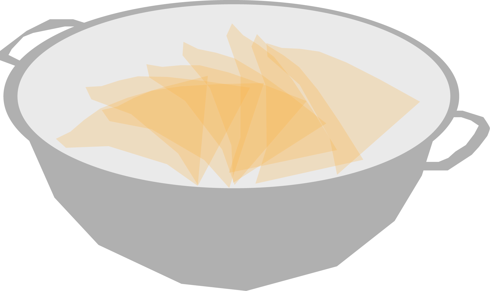
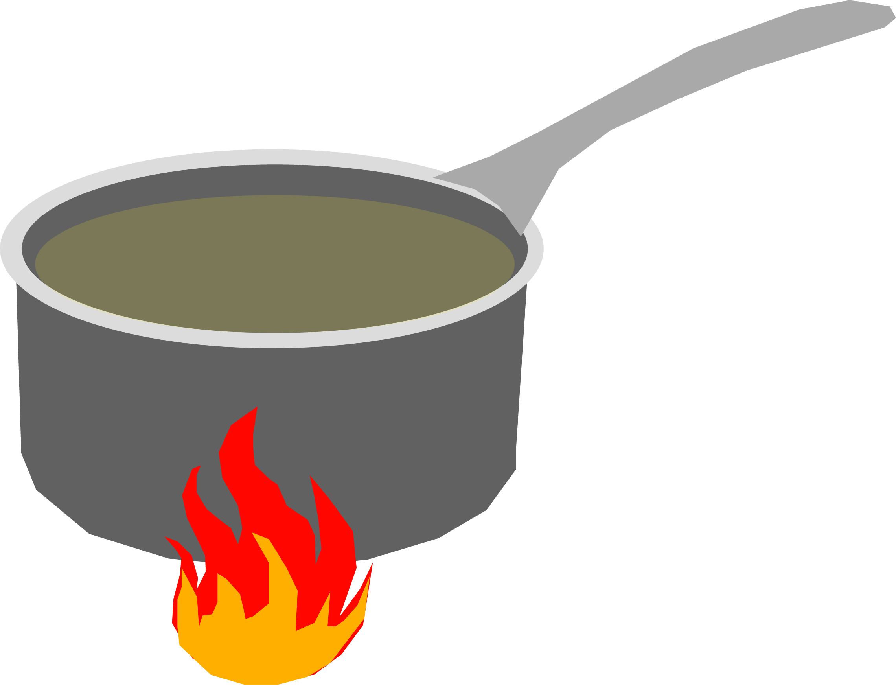
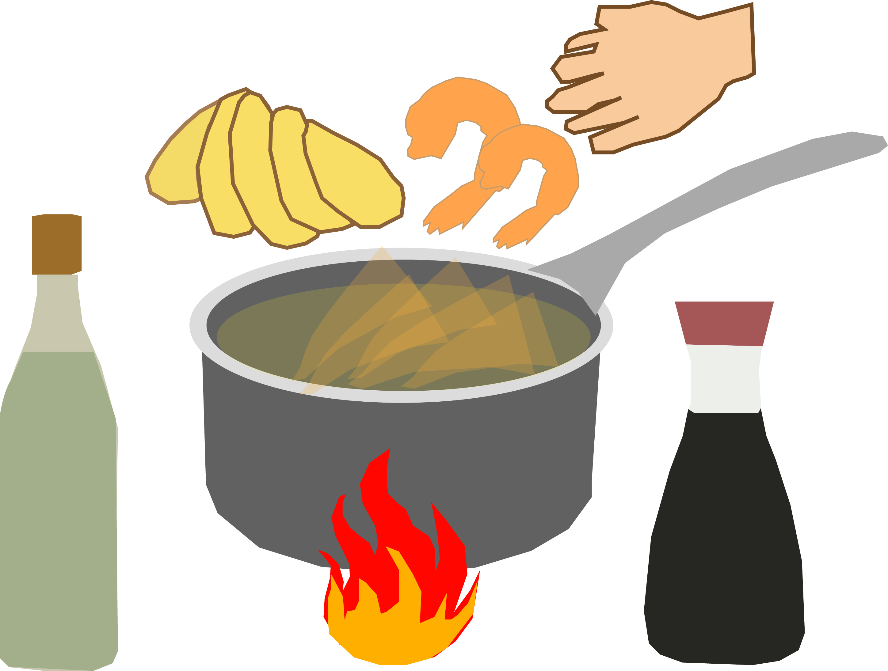
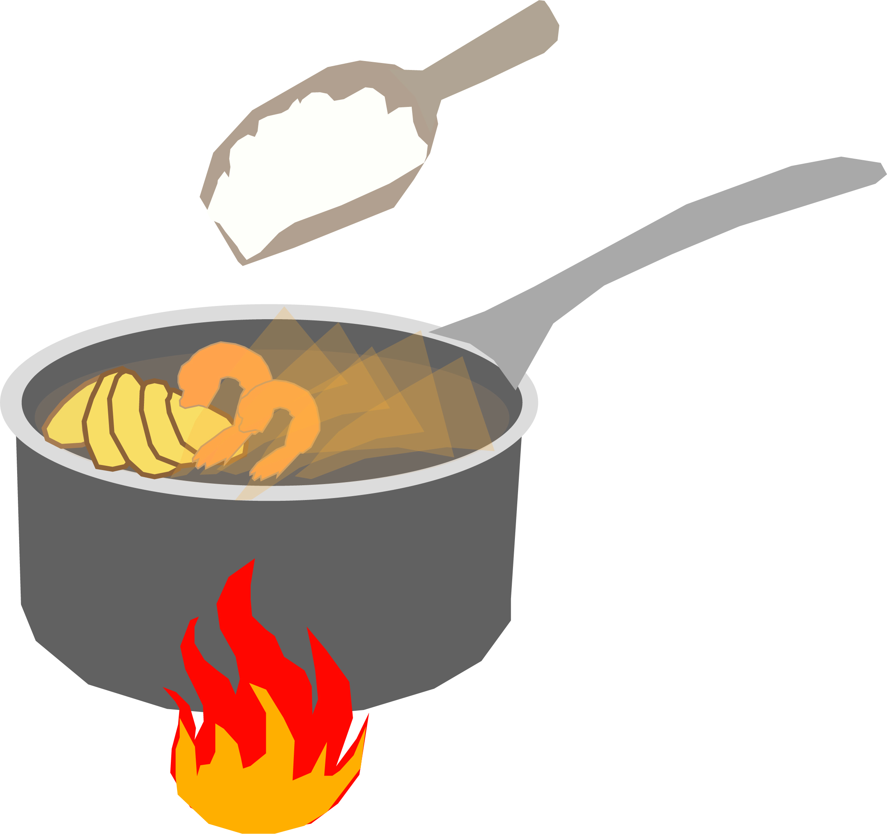
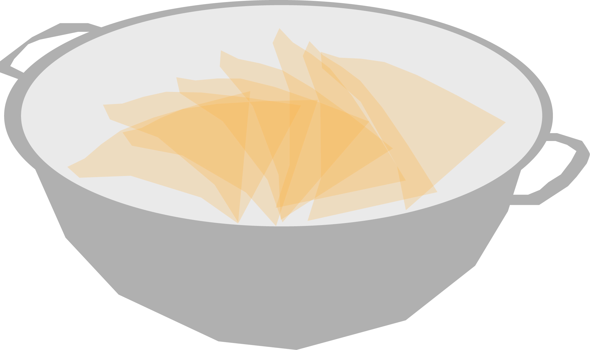
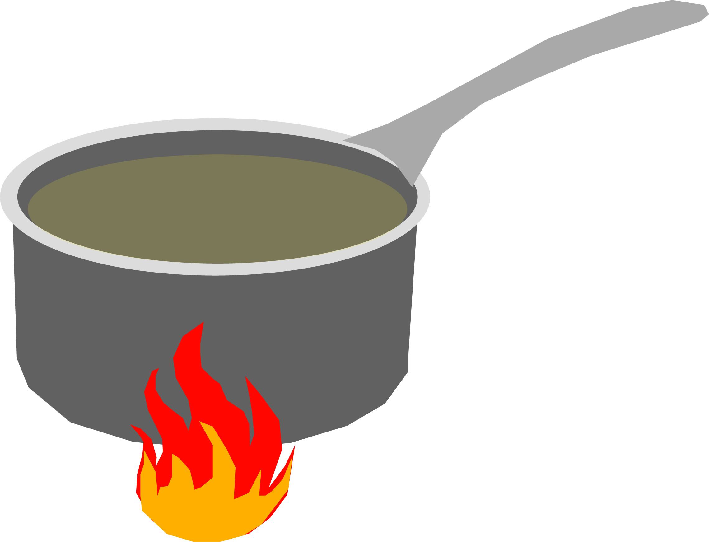
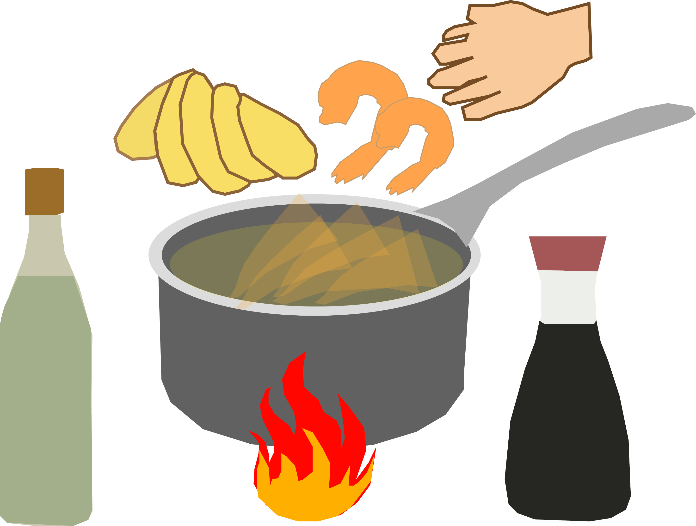
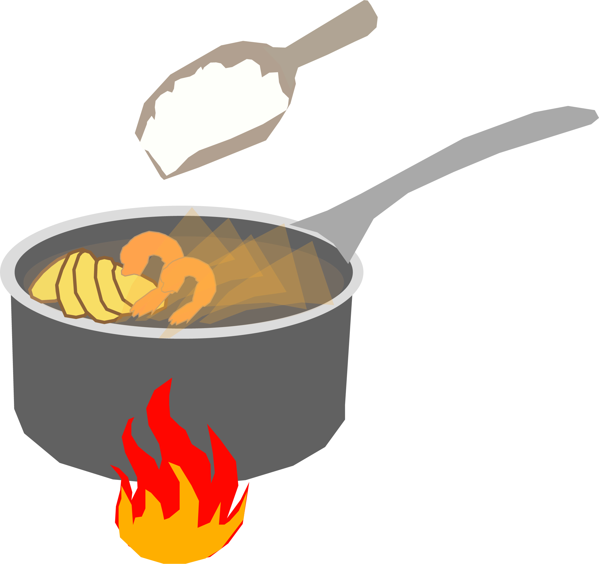
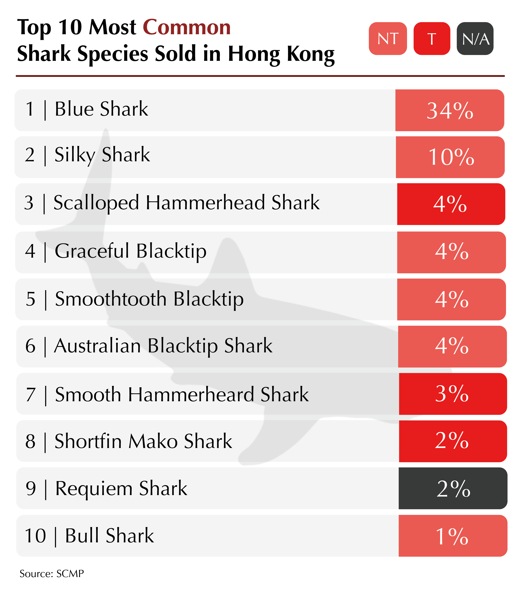
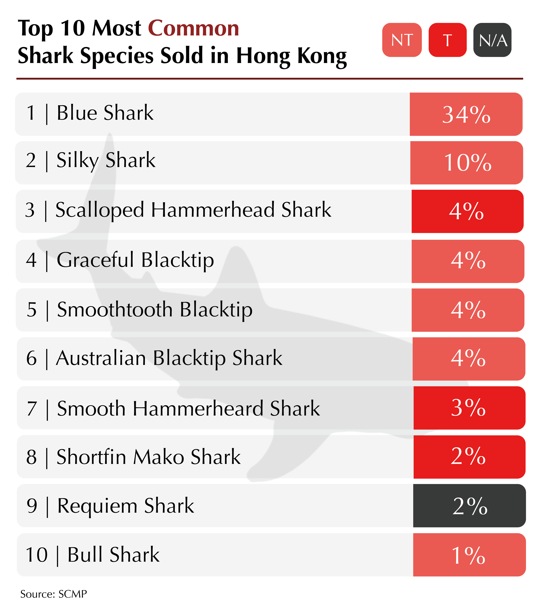

Blood Shark Fins
| The Origin of Shark Fin Soup
The origin of Shark Fin soup can be traced back to as early as the Sung Dynasty in China (AD 968). The emperor at that time used the delicacy to demonstrate his generosity, respect and status to his banquet guests.
The Development of Shark Fin Soup to Shark Fin Trade
The dish is one of the Big 4 (Albone, sea cucumber, Shark fin and fish maw) In Chinese cuisine, a series of dishes which represent prosperity, class and wealth in traditional Chinese culture.

Up till today, Shark Fin soup is seen as a “conspicuous consumption product” and face , meaning it is a public display of social status. The dish is most commonly served in Chinese weddings. The folklore says that if the bride marries into a family without Shark fin soup on the wedding banquet, then she is marrying into a broke family. It is also served in baby showers and an elderly’s birthday celebration.
| What is Shark Fin soup made of?
Shark fin soup is thickened soup made with chicken broth, accompanied by shark fin threads and shredded chicken. The price can range from $5 to $200 dollars depending on the type and style of the shark served.
 







(1) Place the fins in lukewarm water and thoroughly clean and scale them
(2) Place fins in a fresh litre of water and bring them to a boil.
(3) Strain the fins after boiling them for an hour.
(4) In a separate pot, add chicken broth and bring to a boil.
(5) Add ginger and shrimp, simmering for thirty minutes, add soy sauce, wine, broth, fish stock, and fins. Stirring frequently, for twenty minutes.
(6) Remove from heat and slowly stir in the corn starch, in small increments.
| Why there is shark fin trading?
Shark fin trade will never stop when there is demand in shark fins, especially in Asian countries such as China. Here is the brutal practice: A shark is caught and brought to the surface, its fins are sliced off, often while the animal is still alive, and then the body thrown back overboard to drown, bleed to death or be eaten alive by other animals. Such Chinese convention has caused wide massacre among sharks. Quoting the statistics by Life Science, more than 73 million sharks are being killed each year.
| Consumption of shark fin in Hong Kong
According to the statistics by Hong Kong Shark Foundation in 2016, over 98% of the 375 surveyed restaurants offered shark fin on their Chinese New Year menus. Only seven restaurants did not follow such convention:
1. Loong Yuen Cantonese Restaurant (Tsim Sha Tsui)
2. Paradise Dynasty (Causeway Bay)
3. Putien Restaurant (5 outlets)
One out of five (Putien outlets) still provided one dish with shark fin on demand. Of the remaining two, one (Paradise Dynasty) did not offer shark fin as it served only Shanghainese cuisine and the other (Loong Yuen Cantonese Restaurant) did not offer shark fin, due to environmental issues.
Only about 15% out of 2470 menus across nearly 400 restaurants were found to be free of shark fin. While for the 183 restaurants that had a complete set of menus available, only about 10% of them were shark free. Nearly 30 of them had shark fin soup available on request secretly.
The scenario entails that due to the limited availability of fin-free friendly menus and the symbolism of shark fin as wealth and prosper in traditional Chinese culture , it is likely that a large proportion of Hong Kong’s family reunion diners will be feeding on shark fin. However, research has shown that nearly 50% of the shark fin trade in Hong Kong is composed endangered shark species. Hongkongers’ eating habit has sped up the extinction of more rare shark species.
| Hong Kong's role in Shark Fin Trading
# The largest Shark Fin Trader in the world
Sharks are not commonly found in Hong Kong marine area, but shark fins are ubiquitous in the city’s dried seafood stores, hanging on the ceiling or placing inside glass jars neatly. Hong Kong is the world largest shark fin trading hub, which accounts for about 40 percent of global shark fin trade annually, according to World Wildlife Fund.
Not only is Hong Kong the top shark fin trader worldwide, its shark fin consumption is also tremendous. According to Food and Agriculture Organization of the United Nations, the net shark fin consumption of Hong Kong in 2011 is 191,485 tonnes after deducting its import volume with the export volume.
Yet, Hong Kong’s shark fin imports and re-exports have been decreasing, thanks to shipping bans on fin carriage and stricter international regulations on endangered species. The shark fin imports halved since 2007, which decreased from 10,210 tonnes to 4,979 in 2017. Re-exports also fell by 75 percent, which declined from 5,683 tonnes in 2007 to 1,434 in 2017.
| Adverse effects of Hong Kong's Trading
What is the ratio of Humans Kill Sharks VS Sharks Kill Humans?
According to the 2013 edition of Marine Policy, around 100 million sharks are killed every year to satisfy the demand for shark fins and meat. Yet, only 12 people were killed by shark in the peak year.
Due to the shark massacre, what human considered to be one of the world’s deadliest animals are now endangered.
The growth rate of sharks is slower than other fishes, leading to the delay of sexual maturity. Some breeds can only reproduce at 25 years old and their pregnancy will last for 22 months. It is also difficult for them to get pregnant, and even if they do, only few baby sharks would be bornt. Therefore, when there is a sharp decline in the numbers of sharks, restoration is a tall order.
Worse still, in a SCMP’s news reporting, one third of the shark fin products sold in Hong Kong come from vulnerable or endangered species.
 

Shark finning is a cruel practice.

| The battle against Shark Finning
The brutal practice of shark fin hunting has aroused round attention. Activists have adopted a variety of approaches of ceasing any more such cruel practices.
Hong Kong is a one of the main trade hub for shark fin. Hong Kong Shark foundation, together with World Wildlife Fund, have been making exposure to the public and send the message of “Shark-free banquets”, since shark fin soup is a routine cuisine in big occasions. They have engaged 25 companies from different walks of business and have them implement shark-free policy.
However, the progress of protecting shark in Hong Kong is rather slow. Killing shark is still not a crime in Hong Kong unless it is of endangered species. Protection of Endangered Species of Animals and Plants (Amendment) Bill 2017 was finished with its scrutiny in late 2017, and is going to report to the Legco House Committee soon in order to arrange for the resumption of the second reading of the bill.
Shark finning is getting recognised as a world issue and it is gaining more support from governments. However, a lot more could be done to prevent more massacre from happening. Those susceptible countries and regions involved can step up their act by passing law and enforcement to not only stop the hunting, but also to enlarge their scope of animal protection. The new generation should apprehend the unnecessity of serving shark fin soup in banquets since it has zero nutrition value. They should get rid of the custom of having shark as cuisine in a way for celebration and wealth show-off. They should be educated that every species including sharks plays a crucial part in the ecosystem.
That should be the strategy for saving the sharks. That would be the strategy for saving the future
| References
- Chinese New Year Hong Kong Restarant Shark Fin Survey 2016
- State of the global market for shark products
- Shark product import and re-export volume
- More than a third of Hong Kong shark fin products are from threatened species, study reveals
- Shark finning
- Shark Attacks On Humans Vs. Human Attacks On Sharks
- The most effective way to curb shark fin trade in Hong Kong
- Hong Kong Shark Fin Imports Down 50%
- HK Shark Foundation Campaigns